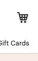
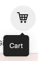

https://www.etsy.com/
Mouse Hover
When hovering over the cart icon, the cursor turns into a pointer. A gray circle centered behind cart goes from (hypothetical) r0 to r17, then to r15 as a jiggle animation. A pointer graphic labeled “Cart” fades in and moves slightly downward. These animations reverse when hovering off the cart.
There are no loops.
The gray pointer graphic is a mode.
 